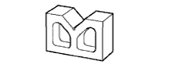

プロペラシャフト ウィズ センタベアリングASSY（4WD） 準備品 【点検】
 | 2046-08 | ダイヤルゲージ(10mm) (株)バンザイ扱い |
|  | V-150B | Vブロック (株)バンザイ扱い |
| TM-110 | ダイヤルゲージ(10mm) (株)イヤサカ扱い |
| VBB-150 | Vブロック (株)イヤサカ扱い | |
 | MB-B | マグネチックベース (株)バンザイ·(株)イヤサカ扱い |
 | SF1.5N | F型トルクレンチ(1.5N·m） (株)バンザイ·(株)イヤサカ扱い |